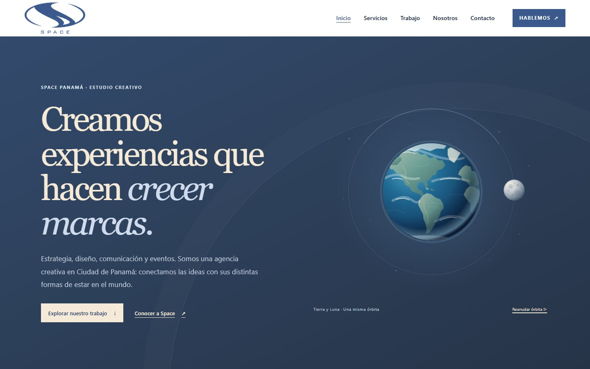
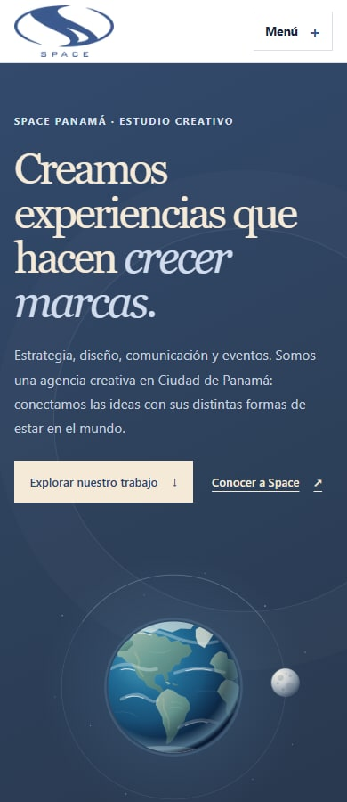
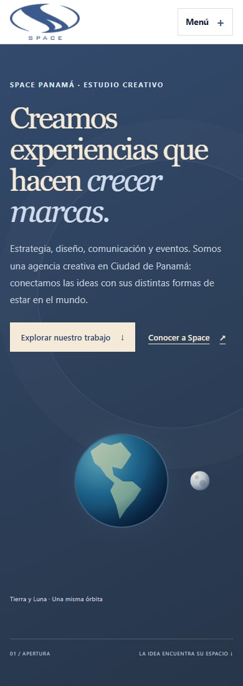
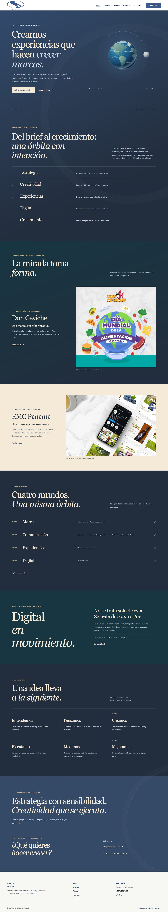
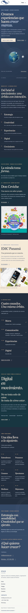

Capturas del build local, no mockups
Primera pantalla
La órbita está pausada en las imágenes para facilitar la comparación. En el preview completa un ciclo cada 10 segundos; se puede pausar o reanudar con teclado. En móvil, la escena pasa debajo del texto y los CTA.


Movimiento opcional, contenido permanente
- Órbita CSS de 10 s: no WebGL, video, cámara o librería nueva.
- Tierra y Luna permanecen separadas durante el ciclo completo.
- Movimiento reducido: escena estática y sin control de animación innecesario.
- Sin JavaScript: SVG estático desde el servidor, con todo el contenido y enlaces disponibles.
- Si el SVG falta o se oculta, aparece la alternativa estática CSS.
Verificaciones ejecutadas en Chrome a 1440, 768, 390 y 320 px: resultados y límites. No equivalen a Safari/Firefox, teléfono físico, lector de pantalla o Core Web Vitals.

El recorrido se conserva
Hero → Manifiesto → Selected Work → Cuatro Mundos → Digital → Método → cierre. Don Ceviche y EMC siguen en los capítulos de trabajo, no en el Hero. No se añadió el concurso ni se importaron candidatos externos.
Ver capturas completas: escritorio y móvil


Recursos y concurso
Inventario ampliado: 8268 recursos por metadatos de E:, repositorio y web oficial por separado. No significa revisión visual exhaustiva ni aprobación de todos los recursos. No se escribieron originales de E:; la subcarpeta dañada no se reparó.
ARTE en CASA: bases y convocatorias de 2020/2021 separadas, premios anunciados sin convertirlos en resultados y derechos de participantes pendientes. No se muestran obras, nombres o retratos de menores.